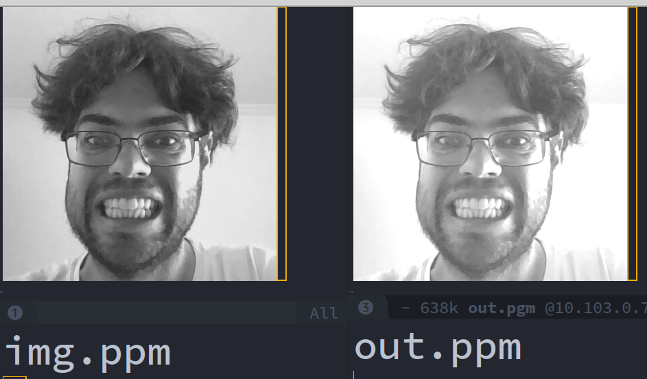

Tutorial - Acelerando - HLS¶
HLS (High-Level Synthesis Compiler) é uma ferramenta de compilação que permite criarmos um componente (hardware/ HDL) a partir de uma linguagem de programação de alto nível (no caso c++). Essa ferramenta facilita muito o desenvolvimento, e abstrai o hardware para software, porém ainda é preciso ter um conhecimento de hardware para utilizar-lha.
Intel¶
The Intel® HLS Compiler is a high-level synthesis (HLS) tool that takes in untimed C++ as input and generates production-quality register transfer level (RTL) code that is optimized for Intel® FPGAs. This tool accelerates verification time over RTL by raising the abstraction level for FPGA hardware design. Models developed in C++ are typically verified orders of magnitude faster than RTL.
centos¶
Warning
Eu só consegui fazer funcionar no centos6, minha solução foi a de executar um docker com centos, e instalar as dependências nele. Eu executo o HLS via o docker CLI.
Note
Para facilitar a vida, vamos disponibilizar uma imagem do docker já configurada. Veja com o seu professor como conseguir.
HLS¶
Vamos gerar um componente que aplica um offset (proc) em uma imagem, para isso, esse componente terá duas interfaces avalon de acesso a memória (AVALON-MM), na primeira interface, iremos acessar a imagem original e na outra iremos escrever a imagem processada.
O nosso hardware terá o seguinte formato:
|-----| AXI
| ARM | ===========================
|-----| | |
| |
|-------| |-------|
| Min | | Mout |
|-------| |-------|
AVALON-MM | ^
V |
|-------| |
| Proc |---------- AVALON-MM
| (HLS) |
|-------|
- Min: Memória da FPGA onde iremos salvar a imagem original
- Mout: Memória na FPGA onde iremos salvar a imagem processada
- TH: Periférico criado pelo HLS
Para isso, iremos utilizar um sintax própria do HLS que define como em C qual tipo de interface será utilizada no componente (lembre das interfaces AVALON, memmory maped e streaming).
O HLS permite que validemos o código em duas camadas distintas: a primeira é compilando o mesmo código que será sintetizado para arquitetura x86, com isso conseguimos validar o algorítimo de forma mais rápida, a segunda é gerando o HDL do componente e simulando via modelsim, tudo isso é feito de forma transparente e automática pela ferramenta.
Note
A simulação do hardware é custosa em termos de tempo de processamento e poder computacional, ela deve ser a ultima coisa a ser feita, antes de usar o componente no hardware. Valide antes compilando para x86 e então simule.
Offset¶
A função a ser acelerada é a seguinte (imgOffSet):
#define OFFSET 50 typedef ihc::mm_master<unsigned char, ihc::aspace<1>, ihc::awidth<32>, ihc::dwidth<8> > Master1; typedef ihc::mm_master<unsigned char, ihc::aspace<2>, ihc::awidth<32>, ihc::dwidth<8> > Master2; // just for a NxN image inline uint pxToMem(uint x, uint y, uint N){ return(x+y*N); } // px + OFFSET hls_avalon_slave_component component void imgOffSet(Master1& imgIn, Master2& imgOut, hls_avalon_slave_register_argument int offSet, hls_avalon_slave_register_argument int N ){ for(int y=0; y < N; y++){ #pragma unroll 8 for (int x=0; x < N; x++){ int px = pxToMem(x,y,N); unsigned int tpx = ((unsigned int) imgIn[px])+offSet; if(tpx > 255) imgOut[px]= 255; else imgOut[px]= tpx; } } }
Note que a função imgOffSet possui quatro argumentos: imgIn, imgOut, offSet e N.
Os dois primeiros são ponteiros de memória, que é respectivamente onde o
componente vai fazer a leitura da imagem e onde ele vai fazer a escrita da
imagem. Já os argumentos offSet e N são: valor a ser aplicado de offSet no px e o tamanho
da imagem em pxs, esse argumentos são do tipo hls_avalon_slave_register_argument, que será
convertido para um banco de registradores.
Além dessas entradas e saídas, para cada interface do tipo mm_master o HLS vai
criar mais um conduit, que será o offset de endereço na qual ele deve acessar
o dado (para a função o endereço 0 é relativo). E mais dois conduits, um para
controlar o inicio do processamento (chamada de função/ call) e outro para
informar sobre o status do processamento (return).
imgIn , imgOut¶
Os dois primeiros argumento são do tipo ihc::mm_master< unsigned char, que significa que serão
traduzidos para um barramento do tipo Avalon e que devem ser tradados como
unsigned char.
ihc::aspace<n>: e um identificador único do barramento (1,2,3,4,...)ihc::awidth<32>: Define o tamanho do barramento de endereço, nesse caso 32 bitsihc::dwidth<8>: Define o tamanho do barramento de dados, nesse caso 8 (leitura de 8 bits)- Existem outras configurações do barramento que podem ser feitas nessa
declaração: latência/ waitrequest/ burst/ (
, ihc::latency<0>, ihc::maxburst<8>, ihc::waitrequest<true>)...
pxToMem()¶
Para facilitar o desenvolvimento, a função pxToMem(x,y,N) traduz um acesso a
px por endereço na matriz para o endereço de memória do px.
printf()¶
Essa função será removida quando a função for compilada para hardware, ela só está disponível para simulação e testes.
offSet, n¶
Precisamos lembrar que estamos criando um componente que resolverá um código em C, e a maneira de conseguirmos
passar argumentos para um componente é criando uma memória interna, que chamamos normalmente de banco de
registrador e dando funcionalidade para eles. É dessa maneira, que os parâmetros offSet e n serão criados.
Na geração do componente, uma memória será inicializada e endereços serão reservados para o offSet e n, como
no exemplo a seguir:
/******************************************************************************/ /* Memory Map Summary */ /******************************************************************************/ /* Register | Access | Register Contents | Description Address | | (64-bits) | ------------|---------|--------------------------|----------------------------- 0x0 | R | {reserved[62:0], | Read the busy status of | | busy[0:0]} | the component | | | 0 - the component is ready | | | to accept a new start | | | 1 - the component cannot | | | accept a new start ------------|---------|--------------------------|----------------------------- 0x8 | W | {reserved[62:0], | Write 1 to signal start to | | start[0:0]} | the component ------------|---------|--------------------------|----------------------------- 0x10 | R/W | {reserved[62:0], | 0 - Disable interrupt, | | interrupt_enable[0:0]} | 1 - Enable interrupt ------------|---------|--------------------------|----------------------------- 0x18 | R/Wclr | {reserved[61:0], | Signals component completion | | done[0:0], | done is read-only and | | interrupt_status[0:0]} | interrupt_status is write 1 | | | to clear ------------|---------|--------------------------|----------------------------- 0x20 | R/W | {reserved[31:0], | Argument offSet | | offSet[31:0]} | ------------|---------|--------------------------|----------------------------- 0x28 | R/W | {reserved[31:0], | Argument N | | N[31:0]} | `` ### main.c A fim de validarmos o projeto, devemos criar uma função main (que não será compilada para o hardware). Nessa função, abrimos um arquivo de imagem no formato `.pgm` ("in.pgm") e geramos outro arquivo de imagem, com a imagem original processada ("out.pgm"). A fim de validarmos o componente a ser gerado ( `offSetImg()` ) devemos alocar duas regiões de memórias contínuas (`in[M_SIZE]` e `out[M_SIZE)` que serão utilizadas como input do componente (simulando o barramento AVALON). ```c int main(void) { int N = IMG_W; int M_SIZE = N*N; // create memorys unsigned char in[M_SIZE]; unsigned char out[M_SIZE]; memset(out,0,sizeof(out)); /* -------------------------- */ /* reading img to mem */ /* -------------------------- */ printf("loading img\n"); readImgPgm(IMG_IN, in, M_SIZE); /* -------------------------- */ /* create fake memorys components*/ /* -------------------------- */ Master1 mm_in(in, M_SIZE); Master2 mm_out(out, M_SIZE); /* -------------------------- */ /* process with kernel */ /* -------------------------- */ printf("kernel\n"); imgOffSet(mm_in, mm_out, N); /* -------------------------- */ /* img out */ /* -------------------------- */ printf("outputing \n"); writeImgPgm(IMG_OUT, out) return 0; }
Note
Quando formos executar a função imgOffSet no nosso hardware, não será tão simples
quanto apenas uma chamada de função.
Testando (x86)¶
Note
Deve ser feito no centos (docker)
Para testar, vamos compilar o nosso projeto para x86 (não será um hardware) e validar
se nossa lógica está correta. Se funcionar, compilamos para hardware.
Para compilar basta usarmos o compilador i++ como no exemplo a seguir:
$ i++ image.cpp -march=x86-64 -o image_x86
E testar o programa gerado:
$ ./image_x86
O resultado deve ser a belíssima foto img.ppm do seu professor, processada com um offset (out.ppm):

Tip
Para gerar uma imagem do tipo ppm você pode usar o Gimp
Note
Essa execução é como se tivéssemos compilado com gcc, só serve para validar lógica
| input | output |
|---|---|
| img.pgm | image (binário) |
| image.cpp | out.pgm |
Acelerando na FPGA¶
Para acelerar na FPGA, vamos compilar novamente a aplicação, porém agora com a flag -march=CycloneV
que representa a nossa FPGA
$ i++ image.cpp -march=CycloneV -o image-CycloneV
Note
Isso pode bastante tempo, o que ele vai fazer é:
- Gerar um HDL a partir da sua função
- Criar um componente para o Platform Designer
| input | output |
|---|---|
| img.pgm | image-CycloneV.prj (pasta) |
image-CycloneV.prj (pasta)¶
Se reparar na pasta do projeto, deve ter uma pasta nova: image-CycloneV.prj, com o seguinte conteúdo:
- components: Pasta com o componente criado (para ser usado no Platform designer)
- quartus: Pasta do projeto Quartus utilizado para compilar o componente, não vamos usar
- report: Pasta com reports gerado pela ferramenta (html)
- report: Pasta para simular o projeto
testando¶
Agora podemos testar nossa aplicação utilizando o hardware criado pelo HLS, para isso basta executar
o novo binário criado quando compilamos para a arquitetura CycloneV.
$ ./image-CycloneV
Warning
Isso vai levar muito tempo! No monstrinho do lab de Arquitetura, levou mais de 1 hora!
Essa simulação é realizada no modelsim! A nível de hardware. O resultado será o esperado quando formos embarcar na FPGA. Com essa simulação conseguimos verificar erros de arredondamento, acesso a memória, entre outros.
Tipa
A imagem out-CycloneV.pgm que está na pasta do projeto, é o resultado dessa simulação.
report¶
O HLS gera um relatório da compilação do hardware, ele pode ser encontrado em: reports/report.html. Um report interessante de se analisar é o Loops analysis, que demonstra os loops do programa:

Otimizando¶
Podemos aplicar diversas técnicas de paralelização no software que irá impactar no hardware criado (área e performance), no manual do HLS (Intel High Level Synthesis Compiler: Reference Manual) tem a documentação que descreve cada uma das técnicas.
Vamos utilizar a do Loop Unrolling, que permite executarmos um loop paralelo:
#pragma unroll <N> for (int i = 0; i < M; ++i) { // Some useful work }
Tip
N é a quantidade de loops a serem executado em //.
Vamos paralelizar a varredura da linha em 8 execuções em paralelo, para isso adicione no for que varre a linha (x):
for(int y=0; y < N; y++){ #pragma unroll 8 for (int x=0; x < N; x++){
Criando um hardware¶
Agora com o componente criado é necessário adicionarmos ele no hardware, isso será feito via Plataform Design.
Para facilitar o desenvolvimento, vamos usar o projeto de hw exemplo da Terasic: DE10_Standard_FB e modificar
inserindo o componente e duas memórias, como indicado a seguir: